Once a raster DEM has been selected as a primary raster, it is possible to calculate a range of surface
parameters at any scale. The scale of analysis is set by selecting either the
Configure->Window scale... menu option or the
button. The window (or kernel)
size is set as the number of cells along one side, so a value of 3 gives 9 cells, 4 gives 16 cells,
5 gives 25 cells etc. The value must be odd and less than the size of the smallest side of the raster.
In addition, a distance decay exponent can be set that determines how important cells nearer the centre
of the window are in comparison with those towards the edge. A value of 0 gives equal importance to all
cells, a value of 1, an inverse linear distance decay, and a value of 2, an inverse squared distance
decay. Negative and non-integer values are also permitted.
The parameter to be calculated is chosen by selecting the Analyse->Surface parameter...
menu item or the button. This
opens a dialogue box allowing a choice to be made from a range of surface parameters (elevation, slope,
aspect, 7 measures of curvature etc.). Calculation of these parameters at broader scales (i.e. using larger
window sizes) can take some time, depending on the size of the DEM to process.
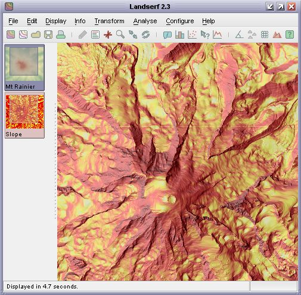
Slope map draped over a DEM.
Surface features detection can be applied in much the same way as surface parameters. The result of this
process is a classification of a surface into 6 categories - pits, channels, passes, ridges peaks and planar
regions (see figure).
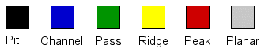
Surface feature types.
The processing scale is again set by selecting Configure->Window Scale...
option. Choosing Configure->Feature extraction... from the same menu brings up a dialogue
box asking for two tolerance values. The slope tolerance value determines how steep the surface
can be while still being classified as part of a pit, pass or peak feature. Larger values of this parameter
tend to increase the number of point features detected, The curvature tolerance value determines
how convex/concave ('sharp') a feature must be before it can be considered part of any feature. Curvature
is recorded as a dimensionless ratio, with typical tolerance values ranging from 0.1 to 0.5. Larger
values tend to increase the proportion of the surface classified as planar, leaving only the sharpest
features identified. To classify features select Feature extraction from the list of options
after choosing the Surface parameter ()
item.
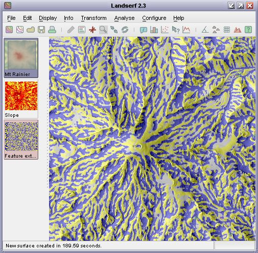
Surface feature classification draped over a DEM.
Alternatively, it may be desirable to ensure that features detected are filtered through a particular
scale to ensure that channels and ridges remain as linear as possible. This may be achieved by selecting
Feature network extraction from the Surface Property Selection window. This
is the first stage required to produce a Vector feature network. If a DEM is selected as the
primary raster and a surface feature layer selected as the secondary raster, the Analyse->Vector feature network
(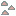) will become available. This will
attempt to produced a connected set of linear ridges and channels that intersect as pass points on the
surface (see Surface Characterisation Theory for more details on
how this process works).
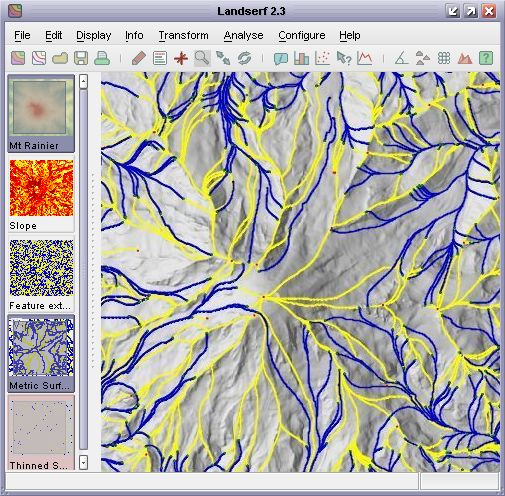
Vector surface feature network draped over a DEM.
A variation of the channel/ridge network is to calculate the 'flow accumulation' surface of a DEM (Analyse->Flow accumulation...). This process estimates the amout of water that would flow over each cell in the DEM
assuming that each cell received a fixed amount of 'rain' plus any water that might have flowed into the cell from
higher neighbours. It can be a useful way of estimating the hydrological characteristics of a suface and the likely
channelized flow of water.
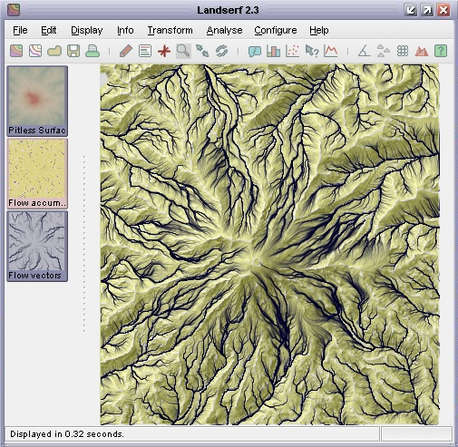
Flow accumulation surface with vector channel overlay
The generation of the flow accumulation layer is best performed on DEMs with pits removed in order to stop 'sinks'
from distrupting the flow network. If a vector channel layer is to be generated, a threshold value of flow accumulation
can be chosen below which no channel is assumed to be formed. The higher the value of the threshold, the fewer the
channels are generated.
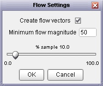
Flow accumulation options
It is possible to calculate any surface feature/parameter over a range of window sizes, and examine
their dependency on scale. By selecting the Analyse->Multi Scale parameter... menu
item any parameter can be calculated at all scales up to a specified maximum window size. The results
of this process is the creation of two surfaces, one containing a measure of the average parameter value,
the other a measure of its variation with scale. The exact form of these measures depends on the type
of parameter/feature being analysed. Details of the measures are given in the 'notes' section of the
surfaces produced. Note that due to the computational intensity involved in deriving these measures,
processing may take some time. Progress is indicated in the bottom right hand corner as a percentage
complete bar and can be stopped at any time by clicking on it.
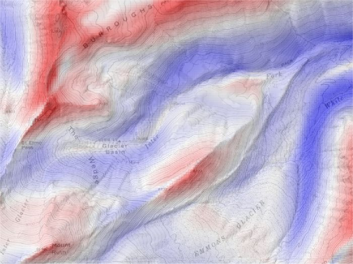
Multi-scale profile curvature mean.
The detection of features (peaks, channels, pits etc.) at a range of scales can result in the same
location on the ground being classified into a number of different features at different scales. The most
frequently classified feature type for any given location can be identified with using the muti-scale
parameter as described above. However it can be useful to use this information to create fuzzy feature
maps that indicate the degree to which a location can be regarded as a pit, peak, channel etc.
Selecting the Analyse->Fuzzy feature classification menu item will produce a set of 6
raster maps, each indicating the membership of one of the feature types when classified using windows from
3x3 to the currently defined window size. Each raster cell is scaled from 0 (indicating the cell is never
classified as a given feature) to 1 (indicating the cell is classified as the given feature at all window
scales). The results of applying this process are shown in the figure below. Note that this can be a
computationally intensive process and can take several hours for large surfaces with large maximum window
sizes).
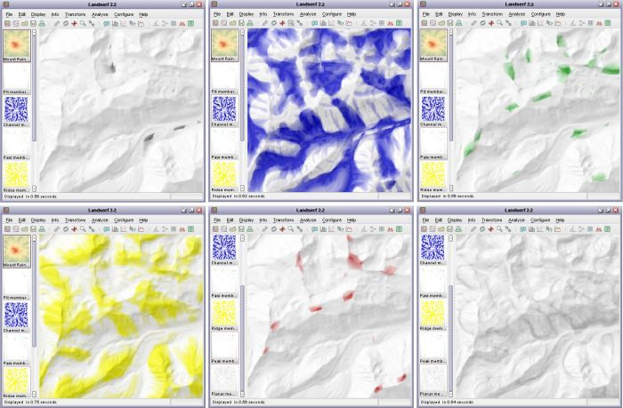
Multi-scale fuzzy feature classification (pits, channels, passes, ridges, peaks, planar).
LandSerf offers an alternative approach to identifying certain types of surface feature. Rather than attempt to classify by measuring morphometry (shape) as described above, it is possible to detect pits and peaks by comparing the relative heights of candidate points. For example, a peak can be defined as a location that is entirely surrounded by other locations that are lower by a given amount.
Identification of pits and their subsequent removal from a DEM can be useful as the first stage of hydrological
analysis where it is assumed that water can only flow from one DEM cell to another that is lower or of the
same elevation. Selecting Analyse->Pit removal will identify pits in a DEM and 'flood' them
such that there are no locations on the surface entirely surrounded by higher DEM cells. The location and
depth of all flooded pits are also produced as a separate output raster (see figure below).
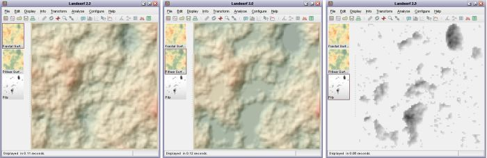
Pit removal applied to fractal surface. Original surface (left), flooded surface (middle) and pits (right)
A similar approach can be taken to the identification of summits and peaks in a landscape. Selecting the
Analyse->Peak classification... menu option will display a dialogue window asking for
two identification criteria to be identified. Minimum height of peak allows an elevation
threshold to be identified below which no peaks can be classified. This simple thresholding allows portions
of a landscape equivalent to the Scottish Munros (peaks over 3000 ft in height) to be identified.
However, this criterion alone is not sufficient to separate portions of a surface that do not dip below
that threshold. A second criterion, the Minimum drop surrounding peak can be entered that
ensures that a peak must be entirely surrounded by elevations that are lower by the given amount. This
allows for more refined definition of distinct peaks. Either or both criteria can be selected in LandSerf.
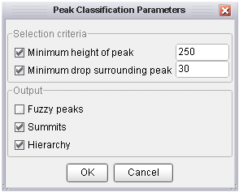
Peak classification options
Output is a map of summits (highest point on a peak) in red and peak extents in yellow. Note that the
extent is defined solely by the supplied criteria. So for example, if a minimum drop of 100m is specified,
the extent of the peak will be all parts of the surface that are vertically within 100m of the summit
elevation (see figure below).
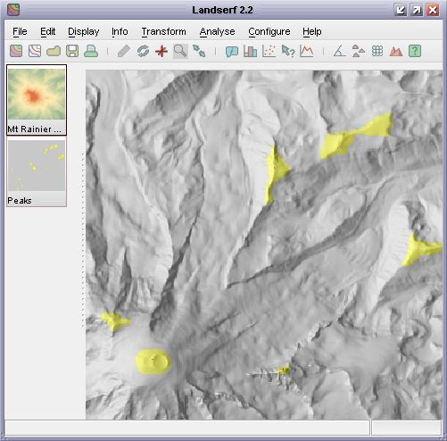
Detection of all peaks with 100m relative drop
More sophisticated peak classification can be chosen by selecting Fuzzy peaks, Summits
and Hierarchy from the peak classification window. Fuzzy peak selection produces a raster of the degree
of peakedness of every cell in the DEM. Summit points of peaks that have a drop of at least that defined by the minimum
drop criterion will have a membership of 1. This decreases to 0 down the side of the peak as it approaches 'minimum drop' vertical
units below the summit.
Selecting the Summit network option will generate a vector map containing the summits of all peaks that meet
the selection criteria. The attribute table associated with the map also contains the relative drop of each summit, its connected pass and the topological ridge connecting each summit to its pass. Selecting
the Hierarchy option additionally identifies 'peaks within peaks'. The catchment area of each of these sub-peaks
is shown in the figure below, along with the relative drop of each summit. If Hierarchy is selected, the Summits
option will additionally produce the vector network that connects each summit to its parent summit.
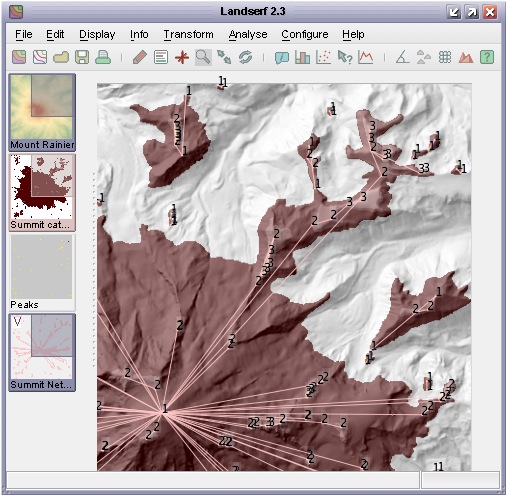
Sub-peaks and summit network with at least 20m relative drop